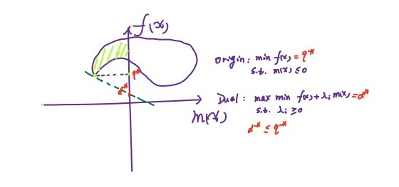

支撑向量机
支撑向量机（SVM）算法在分类问题中有着重要地位，其主要思想是最大化两类之间的间隔。按照数据集的特点：
- 线性可分问题，如之前的感知机算法处理的问题
- 线性可分，只有一点点错误点，如感知机算法发展出来的 Pocket 算法处理的问题
- 非线性问题，完全不可分，如在感知机问题发展出来的多层感知机和深度学习
这三种情况对于 SVM 分别有下面三种处理手段：
- hard-margin SVM
- soft-margin SVM
- kernel Method
SVM 的求解中，大量用到了 Lagrange 乘子法，首先对这种方法进行介绍。
约束优化问题
一般地，约束优化问题（原问题）可以写成：
定义 Lagrange 函数：
那么原问题可以等价于无约束形式：
这是由于，当满足原问题的不等式约束的时候， 才能取得最大值，直接等价于原问题，如果不满足原问题的不等式约束，那么最大值就为 ，由于需要取最小值，于是不会取到这个情况。
这个问题的对偶形式：
对偶问题是关于 的最大化问题。
由于：
证明：显然有 ，于是显然有 ，且 。
对偶问题的解小于原问题，有两种情况：
- 强对偶：可以取等于号
- 弱对偶：不可以取等于号
其实这一点也可以通过一张图来说明：

对于一个凸优化问题，有如下定理：
如果凸优化问题满足某些条件如 Slater 条件，那么它和其对偶问题满足强对偶关系。记问题的定义域为：。于是 Slater 条件为：
其中 Relint 表示相对内部（不包含边界的内部）。
- 对于大多数凸优化问题，Slater 条件成立。
- 松弛 Slater 条件，如果 M 个不等式约束中，有 K 个函数为仿射函数，那么只要其余的函数满足 Slater 条件即可。
上面介绍了原问题和对偶问题的对偶关系，但是实际还需要对参数进行求解，求解方法使用 KKT 条件进行：
KKT 条件和强对偶关系是等价关系。KKT 条件对最优解的条件为：
- 可行域：
- 互补松弛 ，对偶问题的最佳值为 ，原问题为
为了满足相等，两个不等式必须成立，于是，对于第一个不等于号，需要有梯度为 0 条件，对于第二个不等于号需要满足互补松弛条件。
- 梯度为 0：
Hard-margin SVM
支撑向量机也是一种硬分类模型，在之前的感知机模型中，我们在线性模型的基础上叠加了符号函数，在几何直观上，可以看到，如果两类分的很开的话，那么其实会存在无穷多条线可以将两类分开。在 SVM 中，我们引入最大化间隔这个概念，间隔指的是数据和直线的距离的最小值，因此最大化这个值反映了我们的模型倾向。
分割的超平面可以写为：
那么最大化间隔（约束为分类任务的要求）：
对于这个约束 ，不妨固定 ，这是由于分开两类的超平面的系数经过比例放缩不会改变这个平面，这也相当于给超平面的系数作出了约束。化简后的式子可以表示为：
这就是一个包含 个约束的凸优化问题，有很多求解这种问题的软件。
但是，如果样本数量或维度非常高，直接求解困难甚至不可解，于是需要对这个问题进一步处理。引入 Lagrange 函数：
我们有原问题就等价于：
我们交换最小和最大值的符号得到对偶问题：
由于不等式约束是仿射函数，对偶问题和原问题等价：
- ：
- ：首先将 代入：
所以：
- 将上面两个参数代入：
因此，对偶问题就是：
从 KKT 条件得到超平面的参数：
原问题和对偶问题满足强对偶关系的充要条件为其满足 KKT 条件：
根据这个条件就得到了对应的最佳参数：
于是这个超平面的参数 就是数据点的线性组合，最终的参数值就是部分满足 向量的线性组合（互补松弛条件给出），这些向量也叫支撑向量。
Soft-margin SVM
Hard-margin 的 SVM 只对可分数据可解，如果不可分的情况，我们的基本想法是在损失函数中加入错误分类的可能性。错误分类的个数可以写成：
这个函数不连续，可以将其改写为：
求和符号中的式子又叫做 Hinge Function。
将这个错误加入 Hard-margin SVM 中，于是：
这个式子中，常数 可以看作允许的错误水平，同时上式为了进一步消除 符号，对数据集中的每一个观测，我们可以认为其大部分满足约束，但是其中部分违反约束，因此这部分约束变成 ，其中 ，进一步的化简：
Kernel Method
核方法可以应用在很多问题上，在分类问题中，对于严格不可分问题，我们引入一个特征转换函数将原来的不可分的数据集变为可分的数据集，然后再来应用已有的模型。往往将低维空间的数据集变为高维空间的数据集后，数据会变得可分（数据变得更为稀疏）：
Cover TH：高维空间比低维空间更易线性可分。
应用在 SVM 中时，观察上面的 SVM 对偶问题：
在求解的时候需要求得内积，于是不可分数据在通过特征变换后，需要求得变换后的内积。我们常常很难求得变换函数的内积。于是直接引入内积的变换函数：
称 为一个正定核函数，其中 是 Hilbert 空间（完备的线性内积空间），如果去掉内积这个条件我们简单地称为核函数。
是一个核函数。
证明：
正定核函数有下面的等价定义：
如果核函数满足：
- 对称性
- 正定性
那么这个核函数时正定核函数。
证明：
- 对称性 ，显然满足内积的定义
- 正定性 ，对应的 Gram Matrix 是半正定的。
要证： 半正定 + 对称性。
- ：首先，对称性是显然的，对于正定性：
任意取 $\alpha\in\mathbb{R}^N$，即需要证明 $\alpha^TK\alpha\ge0$：
这个式子就是内积的形式，Hilbert 空间满足线性性，于是正定性的证。
- ：对于 进行分解，对于对称矩阵 ，那么令 ，其中 是特征向量，于是就构造了
小结
分类问题在很长一段时间都依赖 SVM，对于严格可分的数据集，Hard-margin SVM 选定一个超平面，保证所有数据到这个超平面的距离最大，对这个平面施加约束，固定 ，得到了一个凸优化问题并且所有的约束条件都是仿射函数，于是满足 Slater 条件，将这个问题变换成为对偶的问题，可以得到等价的解，并求出约束参数：
对需要的超平面参数的求解采用强对偶问题的 KKT 条件进行。
解就是：
当允许一点错误的时候，可以在 Hard-margin SVM 中加入错误项。用 Hinge Function 表示错误项的大小，得到：
对于完全不可分的问题，我们采用特征转换的方式，在 SVM 中，我们引入正定核函数来直接对内积进行变换，只要这个变换满足对称性和正定性，那么就可以用做核函数。